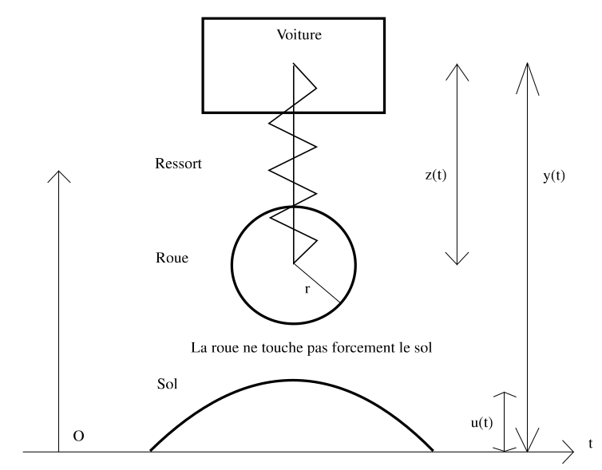
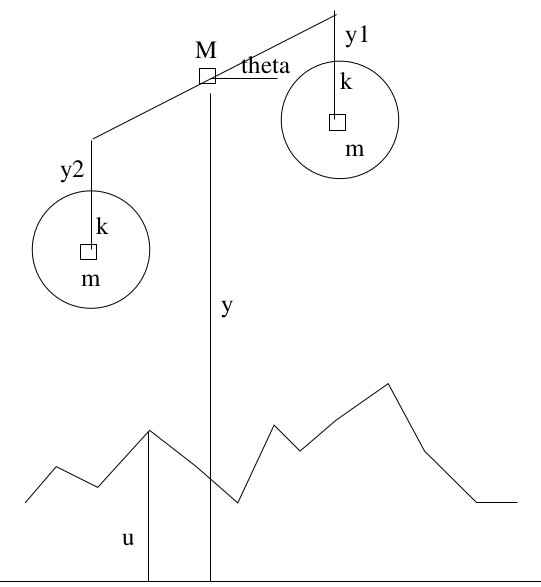
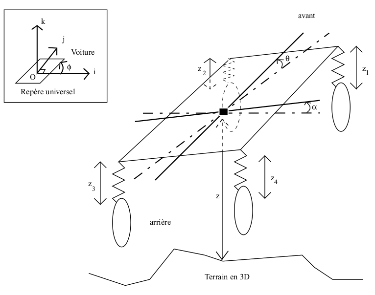

Principe de la moindre action
- BSP
- SynDEX
- Boîte à outils Max+
- Interpréteur Forth
- Principe moindre action


 Tutorial: Dynamique simplifiée d'un véhicule
Tutorial: Dynamique simplifiée d'un véhicule
Comment simuler simplement la dynamique d'une voiture (pour l'implémenter dans un jeu par exemple) ? Je tiens à remercier mon pêre pour me l'avoir expliquer. Attention : ceci n'est pas un cours, mais juste une aide : une vraie voiture ne fonctionne pas de cette façon. Pour voir un effet de cette dynamique vous pouvez télécharger mon jeu : Ecstasy. Vous trouverez sur cette page :
|  |  |  |
{kind=link}
{kind=link}
{kind=link}
Cliquer sur les images pour les agrandir.
- Une brêve introduction au principe de la moindre action, plus un petit exemple.
- L'étude d'un monocycle : le véhicule est modélisé en 2D, par une carcasse de masse ponctuelle accrochée à une roue par un ressort.
- L'étude d'une moto : le véhicule est modélisé en 2D, par une carcasse représentée par une barre de masse ponctuelle à laquelle sont accrochées deux roues par des ressorts. La carcasse n'a pas d'inertie et seul le tangage est modélisé.
- L'étuded'une voiture : le véhicule est modélisé en 3D, par une carcasse représentée par une plaque de masse ponctuelle à laquelle sont accrochées quatre roues par des ressorts. Par rapport au sujet précédent, on étudie en plus le roulis et la carcasse a une inertie.
- Le mouvement horizontal de la voiture : comment le véhicule tourne lorsqu'on tourne le volant.
Article précédent: |
Page d'accueil |
Aller en haut |
Article suivant: |
| Elémination des parties cachées | Forth |